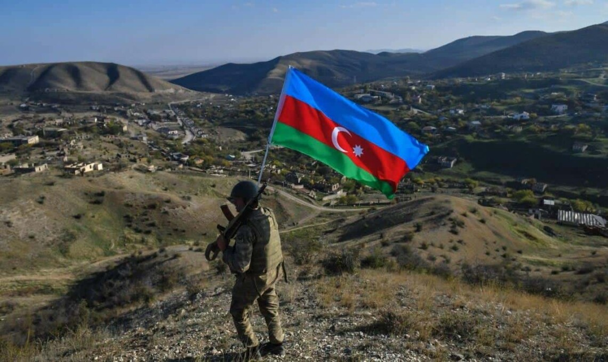

Карабах
Karabakh is one of the most ancient and picturesque corners of Azerbaijan. The name of the region was formed from the Azerbaijani words “kara” and “bagh”. As in other Turkic languages, in the Azerbaijani language the word “kara” denotes not only the color black. This word has other meanings - “tight”, “dense”, “large”. From this point of view, the name “Karabakh” means “large garden”, “densely planted garden”. Like Karabakh itself, so too its name belongs to the Azerbaijani people.
Karabakh is one of the oldest human habitats. In the Azykh cave, located near the city of Fizuli in Karabakh, scientists discovered interesting artifacts telling about the life of ancient people. The most valuable find here was a fragment of the lower jaw of an ancient man. This man was named after the cave in which he lived - “Azykhanthrop.” Thanks to this find, Azerbaijan was included in the map “The Ancient Inhabitants of Europe”
These lands have been part of Azerbaijani state entities since ancient times. In the mid-18th century, one of our independent states arose in Karabakh. This state was called the Karabakh Khanate. Its foundation was laid by Panah-Ali Khan. To protect the khanate, he first built the fortresses of Bayat and Shahbulag, and also ordered the construction of an even more powerful fortress in Shusha. In 1757, the capital of the Khanate was moved to Shusha. The fortress was then named after its founder - Panakhabad. Subsequently, it again began to be called the Shusha fortress.
Shusha is located in the mountainous part of Karabakh among green forests and clean springs. The name Shusha in Azerbaijani is also due to the fact that the city is located on top of the mountains. Shusha is known for the cleanest air, the beauty of nature, as well as water sources - Isa-bulag, Turshsu, Sekine-bulag, Soyuk-bulag, Yuz-bulag, Kirk-bulag, Charyk-bulag, etc. There are house-museums of the poetess Khurshidbanu Natavan, General Samed-bey Mehmandarov, the great composer Uzeyir Hajibeyov, the prominent singer Bulbul, the poet and artist Mir-Mohsun Navvab, as well as the estate of Ibrahim Khan and his daughter Kara Boyukhanum, the “Ganja Gate”, fortress walls and other historical and cultural monuments.
At the beginning of the 19th century, the Russian Empire began the conquest of Azerbaijani lands. As a result of the Russian occupation, Armenian families were resettled from Iran and the Ottoman Empire to Karabakh and other Azerbaijani lands - Erivan and Nakhchivan. Many lands were confiscated from Azerbaijanis and transferred to the disposal of Armenian settlers.
In 1923, despite the protest of the Azerbaijani population, the Soviet leadership gave the Armenians who had once been resettled to our lands the right to autonomy and created the Nagorno-Karabakh Autonomous Region here.
The Armenians, resettled to our lands from other places, have long wanted to appropriate the territory of our Motherland, and they committed real genocide against our people.
Today, as a result of Armenia’s military aggression against the Republic of Azerbaijan, 20 percent of our lands - Nagorno-Karabakh and the 7 adjacent regions - are occupied. This act of aggression led to casualties among our compatriots - many of them, including children, women and the elderly, were killed, over 1 million of our compatriots were expelled from their lands and became refugees.
The Azerbaijani state does not want war, it wants the conflict to be resolved peacefully and the Azerbaijani lands to be liberated from occupation. Therefore, since 1994, then President Heydar Aliyev began peace negotiations. Since 2003, negotiations have been continued by President Ilham Aliyev. However, every citizen must always be ready to defend his homeland in battle.